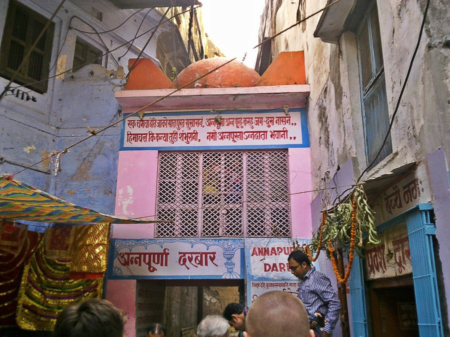
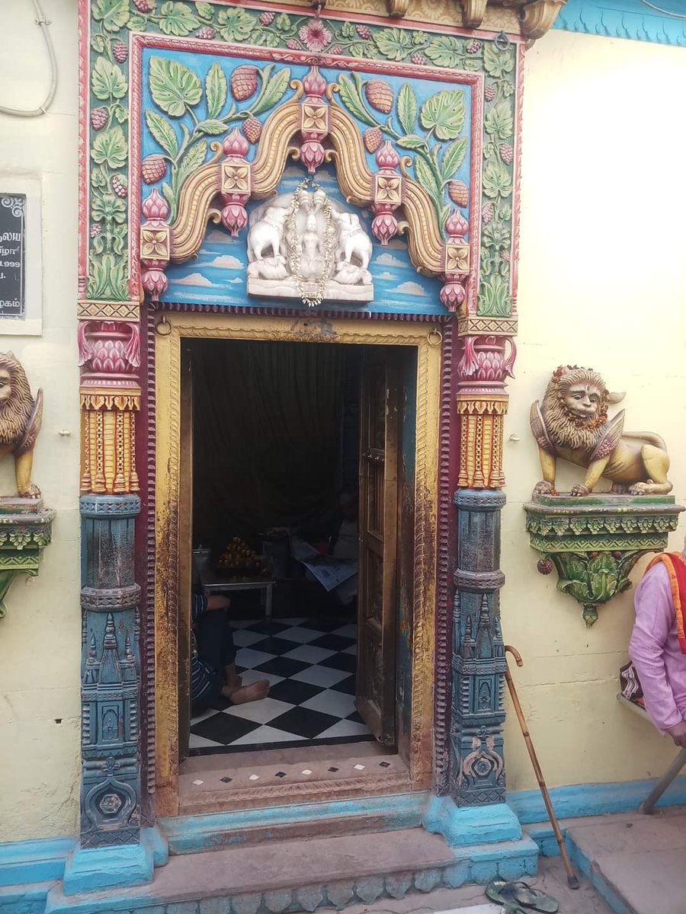
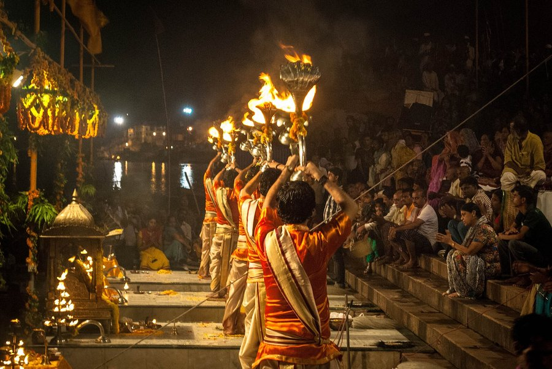
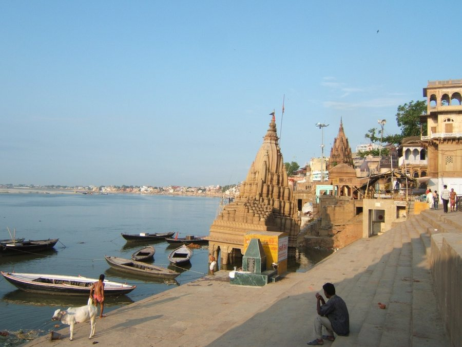
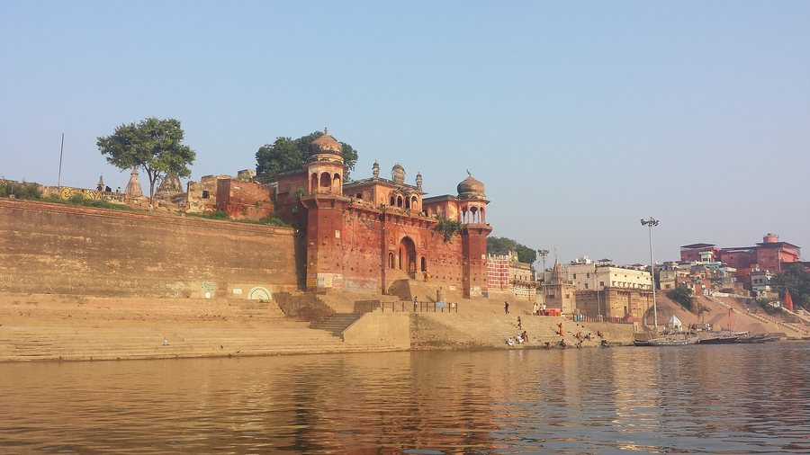
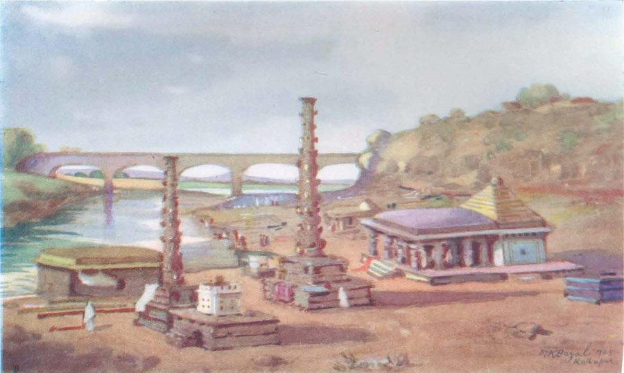
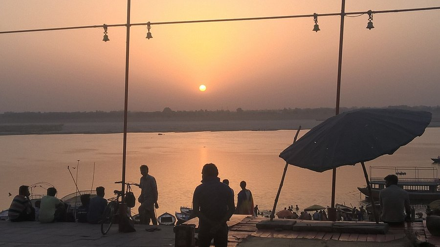
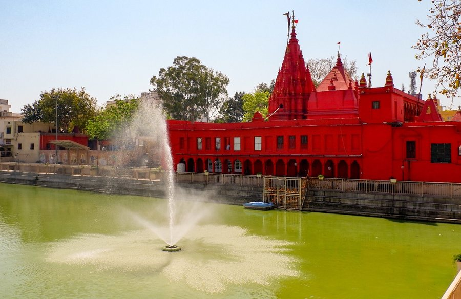
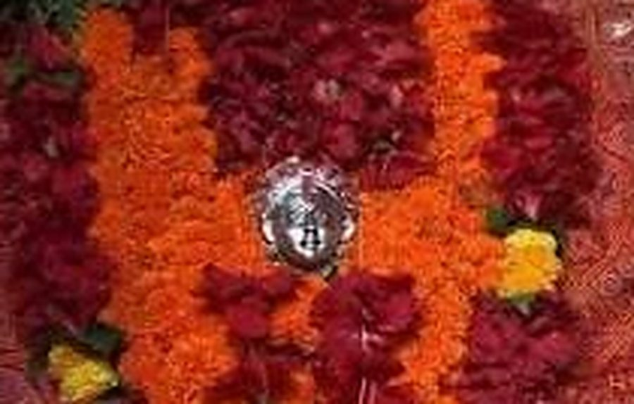

Ghat
Manikarnika Ghat
The most sacred cremation ghat, a symbol of moksha. Visit with respect.

An honest guide from our hotel near Dashashwamedh Ghat, Varanasi — distances from our door, the right hour for the Ganga Aarti, and what's worth knowing.
Pick a filter and tap a place. Distances are from our Godowlia hotel door; our desk books the car, Aarti boat or guide.

The golden-domed heart of Kashi, just 400 m from our hotel.

The goddess of food, right beside Vishwanath.

The Kotwal of Kashi. Every visit politely needs him.

A revered Shakti shrine above the ghats.

The fire-lit Ganga Aarti, a short walk away.
The most sacred cremation ghat, a symbol of moksha. Visit with respect.

Palatial stone fronts and the most photographed ghat.

Quiet and pretty, with a Shiva temple leaning into the water.

A fortress-like 18th-century palace at the water's edge.

Varanasi's second major cremation ghat.

Where, by tradition, five rivers are said to meet.

Sunrise prayers, yoga and the morning Ganga Aarti.

Varanasi's beloved Hanuman temple.

A red temple beside a sacred tank.

Where Tulsidas is said to have written the Ramcharitmanas.

A grand campus with a famous Vishwanath temple.

A museum of miniatures, sculpture and art.

Where the Buddha first taught.

An old riverside fort with a quiet museum.

A full-day pilgrimage to the Mother in the hills.

Shitla Dham, a much-loved Sheetla Mata shrine.
Nothing here yet. Try another filter.
Four moments when Banaras glows brightest, and your room near Kashi Vishwanath is five minutes from it all. Book early.
On Kartik Purnima Dashashwamedh and every ghat glow with diyas and the Ganga turns gold.
Gulal in the lanes, thandai in your hand and Kashi at its happiest, starting from Rangbhari Ekadashi.
The holy month of Shiva. Ganga jal, bol-bams, and a Monday queue that is a pilgrimage in itself.
The great night of Shiva. Kashi Vishwanath stays awake and so does everyone staying near it.
Markers show ten top sights around our hotel in Godowlia, Varanasi.
For live directions, open Pearl Courtyard on Google Maps. Distances shown are approximate road distances from the hotel.
Let us plan your day in Banaras